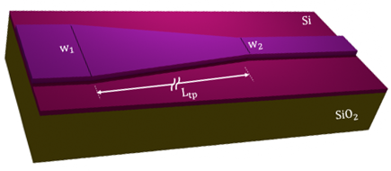
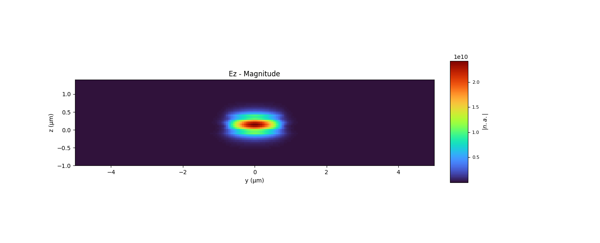
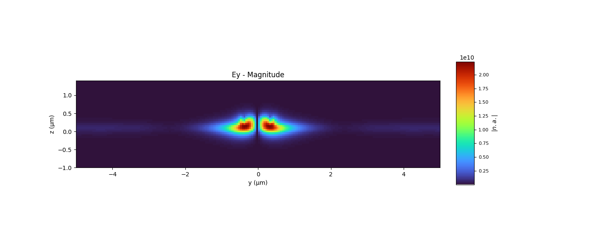

Application Examples
Polarization Converter Using a Tapered Silicon Ridge Waveguide
Introduction
Tapered waveguides with an adiabatic change in the propagation direction are useful for enhancing the coupling efficiency between two waveguides with different widths. Mode hybridization can occur in asymmetrical silicon-on-insulator (SOI) waveguides for certain waveguide widths, where the effective indices of two guided modes match [1-2]. Consequently, the field components of TE and TM modes become comparable, enabling polarization conversion. In this study, pyFDTD is used to analyze a polarization converter (TM0 to TE1) using an SOI taper waveguide connecting two SOI waveguides with different widths [1]. We use this example to demonstate the ability to individualy set the modes we are exciting in each port.
{kind=link}

Simulation Setup
The ridge waveguide setup code is found below. The mode indices are set to [2,2]. So, we purposefully
select the modes we are converting: TM0 to TE1. The GDS II file of the design can be found here:
Ridge_Taper_WG_pol_converter.gds.
from pyOptiShared.LayerInfo import LayerStack
from pyOptiShared.Material import ConstMaterial
from pyOptiShared.DeviceGeometry import DeviceGeometry
from pyFDTDKernel.pyFDTDSolver import pyFDTDSolver
##########################################
### Material Settings ###
##########################################
SiO2_mat = ConstMaterial(mat_name="SiO2", epsReal=1.445**2)
Si_mat = ConstMaterial(mat_name="Si", epsReal=3.455**2)
##########################################
### Layer Stack Settings ###
##########################################
layer_stack = LayerStack()
layer_stack.addLayer(name="L0", number=0, thickness=0.2, zmin=0.0,
material=Si_mat, cladding=Si_mat)
layer_stack.addLayer(name="L1", number=1, thickness=0.2, zmin=0.2,
material=Si_mat, cladding="Air_default")
layer_stack.setBGandSub(background="Air_default", substrate=SiO2_mat)
##########################################
### Device Geometry/Port Settings ###
##########################################
device_geometry = DeviceGeometry()
device_geometry.SetFromGDS(
layer_stack=layer_stack,
gds_file=r"Ridge_Taper_WG_pol_converter.gds",
buffers={'x':1.5,'y':1.5,'z':1.5}
)
device_geometry.SetAutoPortSettings(
direction="x",
port_buffer=1.0,
min=0.1,
max=8.5,
)
##########################################
### FDTD Settings ###
##########################################
fdtd_solver = pyFDTDSolver()
fdtd_solver.SetPorts(profile="gaussian-pw", lcenter=1.5, lmin=1.45, lmax=1.55, npts=21, mode_indices=[2,2])
fdtd_solver.AddDFTMonitor(mon_type="2d-z-normal", z0=0.2, name="MyDFTMonitor1",
lmin=1.45, lmax=1.55,npts=3,
save_ex=True, save_ey=True)
fdtd_solver.SetBoundaries()
fdtd_solver.SetSimSettings(sim_time=50000, space_step=0.050, subpixel_level=1, save_path=r"results",
device_geometry = device_geometry, export_mat_grid=True, show_modes=True)
# ##########################################
# ### Run and Post Processing ###
# ##########################################
results = fdtd_solver.Run()
Results
The corresponding refractive indices for the input and output waveguides using the VFD Mode Solver are:
Input Waveguide |
Effective Index |
Output Waveguide |
Effective Index |
TE0 |
3.129 |
TE0 |
3.058 |
TE1 |
3.026 |
TM0 |
2.853 |
TM0 |
2.912 |
TE1 |
2.761 |
The mode profiles for the first three modes of the input and output waveguides (TE0, TE1, and TM0) are shown in the original article figures. The simulated mode results can be seen in the following panels:
{kind=link}

{kind=link}

Conclusion
The simulation demonstrates successful polarization conversion from TM0 to TE1 using a tapered SOI ridge waveguide. This design can be applied in integrated photonic circuits for polarization control and mode conversion applications.
References
Dai, Y. Tang, and J. E. Bowers. Mode conversion in tapered submicron silicon ridge optical waveguides, Optics Express, Vol. 20, No. 12, pp. 13425–13439, 2012.
Vermeulen et al. Efficient tapering to the fundamental quasi-TM mode in asymmetrical waveguides, In 15th European Conference on Integrated Optics (ECIO), 2010.